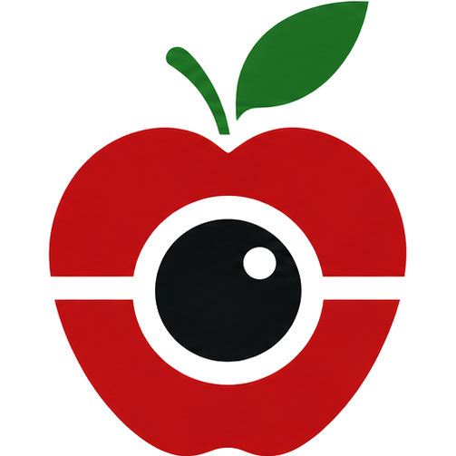
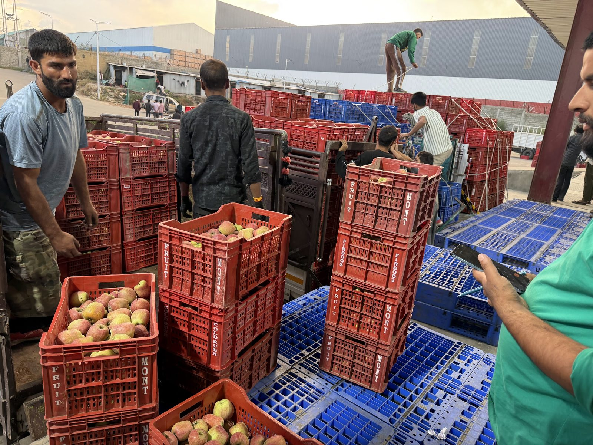
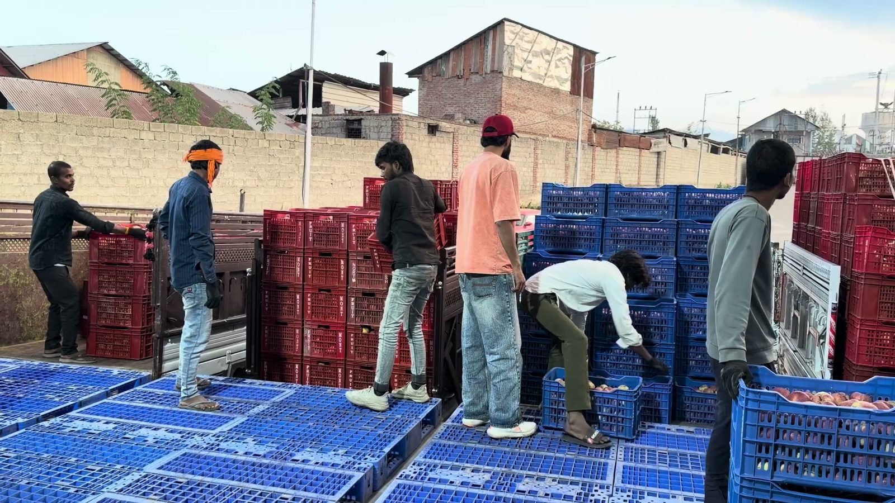
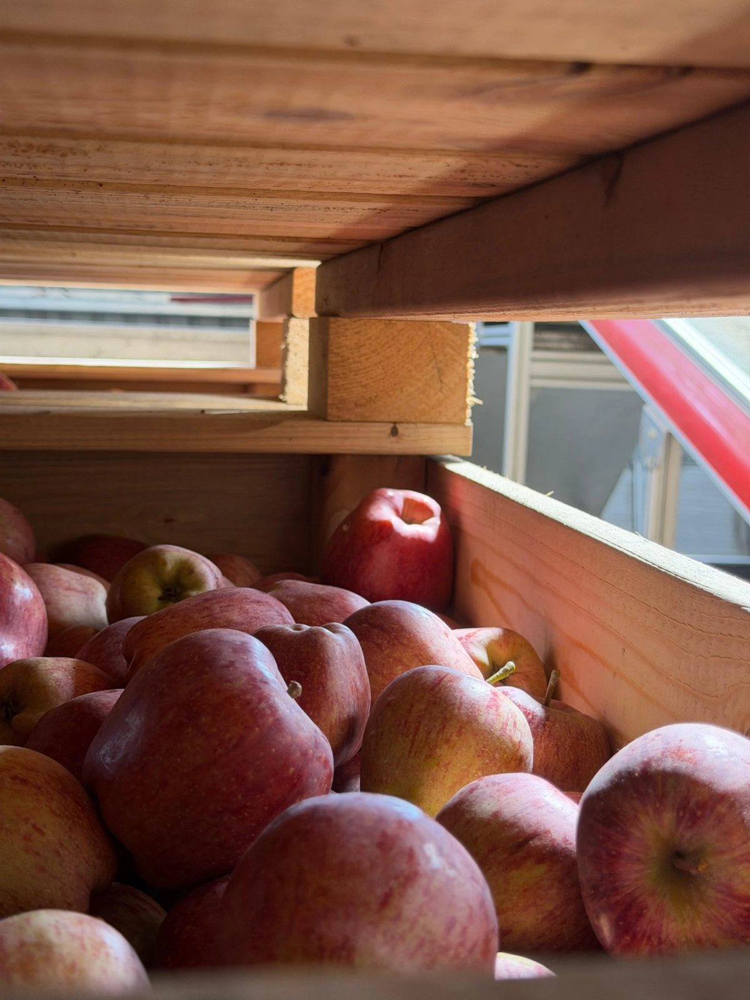
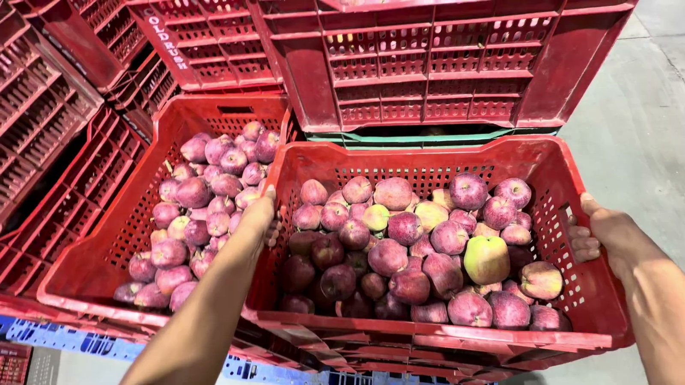
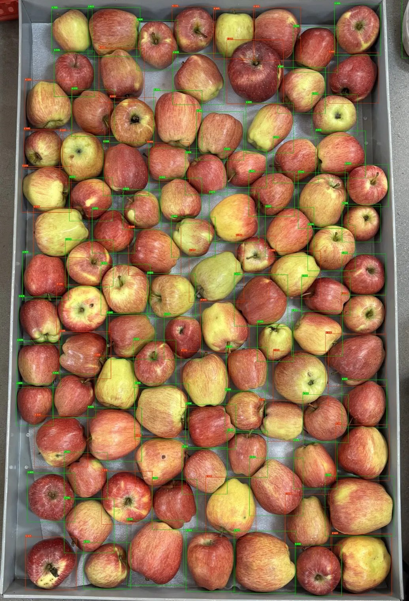

Grade A68%
Grade B32%
AI-powered computer vision that makes apple quality assessment faster, more consistent and data-driven.


For cold-storage teams who need quality data while the trucks are still at the gate.
01 / The problem
During high-volume intake, manually assessing quality can become time-consuming and inconsistent. Malus Lens is designed to help businesses make this process faster and more data-driven.
Crates arrive together, and every lot needs a decision.
Fruit has to be assessed before it goes into storage.
Quality is judged by eye, a handful of apples at a time.
Two people can read the same lot differently.
Pressure is highest exactly when there's least time.



Apple intake & cold storage, Kashmir
02 / The solution
Malus Lens uses AI-powered computer vision to assess apple quality from images, helping businesses obtain fast, consistent and measurable quality insights.
Photograph sampled apples.
Computer vision identifies and classifies each apple.
Clear, measurable results your team can act on.
03 / Benefits
Want to see it on your own fruit?
04 / Operations
Malus Lens is being developed with Kashmir's apple industry and cold-storage ecosystem in mind — for operations anywhere apples are received, assessed and stored.
05 / Performance
Malus Lens combines computer vision and machine learning to identify and classify apples from captured images, turning visual inspection into structured quality data.

06 / Product
Good morning
Recent
07 / Why Malus Lens
08 / Customer feedback
09 / Vision
We believe the future of agriculture will be increasingly powered by intelligent technology and better data. Malus Lens is starting with apple quality assessment — building practical AI tools that help agricultural businesses make faster, more informed decisions.
Starting with apples. Building for smarter agricultural operations.
Book a meeting
Talk to the Malus Lens team about your operation, see the product in action, and explore how AI-powered quality assessment can fit into your workflow.
Contact
Questions about Malus Lens or your operation? Reach the team directly.